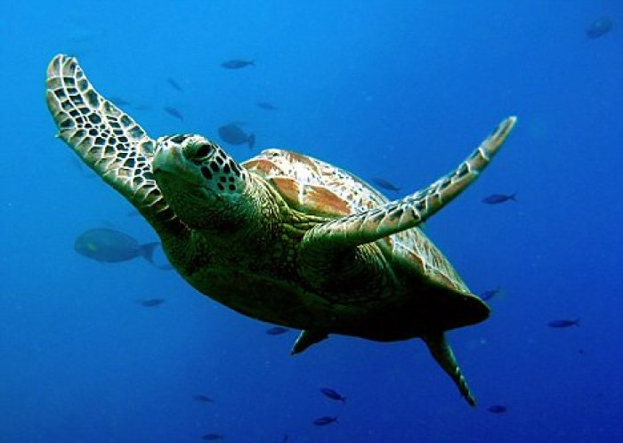
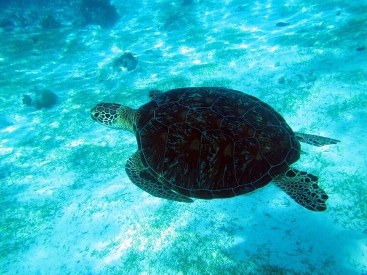
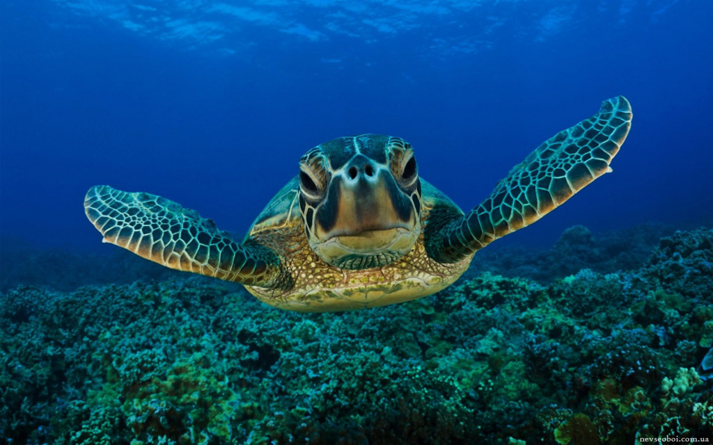

形态描述依据海南1雄2雌2幼，共5号标本描述：大型海产龟。雄性背甲长840mm，雌性460mm。吻部短圆，上颚前端不呈钩曲，其角质的内表面有两条垂直的角嵴；下颚略向上钩曲，颚缘具强锯齿，咀嚼面有一由短的尖齿突连接而成的中嵴。头背具对称大鳞片，前额鳞1对。背甲呈心形，盾片平铺镶嵌排列；颈盾短而宽，与相邻缘盾并列；椎盾5枚，第一枚呈扇形，第二至第四枚呈六边形，第五枚呈梯形；肋盾4对，第一对肋盾不与颈盾相接；每侧有缘盾11枚。腹甲平坦，前、后缘圆弧形，前部有1枚三角形的间喉盾，其它各盾片均沿腹中线整齐对称紧密排列；腹盾缝><股盾缝>肛盾缝><喉盾缝>胸盾缝>肱盾缝>喉间盾。每侧有4枚下缘盾；腋，胯部各具若干枚小盾片。四肢桨状，覆以大鳞；前肢长于后肢，内侧各具1爪，雄性前肢的爪强大而弯曲成钩状。尾短，雄性尾长，SMNH8180032号标本尾长达310mm，为其甲长的1/3。
生活时背甲橄榄绿色或棕褐色，杂有黄白色的放射纹。腹甲黄色。头及四肢棕褐色。 SMNH785007号标本，系刚孵化的幼龟，背甲棕黑色，具3棱，脊棱明显，其色较浅，侧棱较弱。腹甲黄白色，两腹侧各具一条明显的纵棱；脐孔位于腹盾和股盾间缝的中央部。
椎盾5枚；肋盾4对，第一对不与颈盾切接；喉盾前有单枚间喉盾；背、腹甲间有一系列下缘盾。前额鳞1对；吻部短圆，上颚前端不成钩曲。四肢桨状，每肢内侧各具1爪
终身生活于海洋中。以鱼类、头足纲、甲壳纲动物及海藻为食。4—10月为繁殖季节，雌、雄海龟常在礁盘或沿岸水域交配，交尾时间长达3—4小时，交配后雌龟于晚间爬上岸边沙滩掘坑产卵，先以前肢挖一深度与体高相当的大坑，伏于坑内，再藉后肢交替动作挖一口径20cm、深50cm左右的“卵坑”，产卵于坑内，产卵一般在夜晚10时至翌晨3时进行，卵产毕后，将卵坑用沙覆盖后离滩返海。每年可产卵23次，每产91—157枚，多可达238枚。卵白色，圆球形，卵壳革质而韧软，卵径35—58mm。孵化期30一90天，通常45—60天，幼龟自出壳即爬归海水中生活。我国广东省惠东、海南的西沙群岛沿岸均为海龟产卵繁殖地。
广布于大西洋、太平洋和印度洋。中国海龟北起山东、南至北部湾近海均有分布。长可达1米多，寿命最大为150岁左右。头顶有一对前额鳞。四肢如桨，前肢长于后肢，内侧各有一爪。头、颈和四肢不能缩入甲内。主要以海藻为食。生活在大西洋、太平洋和印度洋中，到陆地上产卵，孵出幼体。为国家二级保护动物。海龟适应在水中生活，四肢变成鳍状，利于游泳。一般仅在繁殖季节离水上岸。雌龟将卵产在掘于沙滩的洞穴中。
